１．二维数组查找
题目描述
在一个二维数组中（每个一维数组的长度相同），每一行都按照从左到右递增的顺序排序，每一列都按照从上到下递增的顺序排序。请完成一个函数，输入这样的一个二维数组和一个整数，判断数组中是否含有该整数。
思路
可以从左下开始进行查找，i代表行,j代表列，如果当前的array[i][j]大于target则说明需要找更小的，i-1上移一位得到的就是更小的值。如果当前的array[i][j]小于target则说明需要找更大的，j+1右移一位得到的就是更大的。直到i等于0,j等于array的宽度代表找完了。时间复杂度为m+n。
class Solution {
public:
bool Find(int target, vector<vector<int> > array) {
if(array.size()==0) return false;
int j=0;
int i=array.size()-1;
int edge=array[0].size()-1;
while (i>=0&&j<=edge){
if(array[i][j]==target){
return true;
}
else if(array[i][j]<target){
j++;
}
else{
i--;
}
}
return false;
}
};2、替换空格
题目描述
请实现一个函数，将一个字符串中的每个空格替换成“%20”。例如，当字符串为We Are Happy.则经过替换之后的字符串为We%20Are%20Happy。
思路
替换如果是从前往后的替换的话，则插入一位，之后的所有都需要后移一位，显然操作起来比较复杂。所以还是从后往前的替换。要注意函数中的length是限制新的字符串的最大长度。
class Solution {
public:
void replaceSpace(char *str,int length) {
if(str==NULL||length<=0)
return;
//统计字符串中的空字符的个数
int blanknum=0;//空格字符数量
int newlen=0;//定义新的字符串长度
int oldlen=0;
for(int i=0;str[i]!='\0';i++)
{
oldlen++;
if(str[i]==' ')
blanknum++;
}
newlen=oldlen+2*blanknum;//新的字符串长度
//因为原先有个空格，所以只需要乘以2，不是3
//替换空格字符
//需要判断新的字符串长度是否大于oldlen
if(newlen>length)//length是给的数组最大长度
return;
for(int i=oldlen;i>=0;i--)
{
//小于的话进行替换
if(str[i]!=' ')
str[newlen--]=str[i];
else
{
str[newlen--]='0';
str[newlen--]='2';
str[newlen--]='%';
}
}
}
};3、从尾到头打印链表
题目描述
输入一个链表，按链表从尾到头的顺序返回一个ArrayList。
思路
这个很简单从头到位遍历链表，然后使用vector来存储返回的值，插入的时候一律插在vector的起始位置。
/**
* struct ListNode {
* int val;
* struct ListNode *next;
* ListNode(int x) :
* val(x), next(NULL) {
* }
* };
*/
class Solution {
public:
vector<int> printListFromTailToHead(ListNode* head) {
vector<int> result;
ListNode *p=head;
while(p!=NULL){
vector<int>::iterator b=result.begin();
result.insert(b,p->val);
p=p->next;
}
return result;
}
};
4、重建二叉树
题目描述
输入某二叉树的前序遍历和中序遍历的结果，请重建出该二叉树。假设输入的前序遍历和中序遍历的结果中都不含重复的数字。例如输入前序遍历序列{1,2,4,7,3,5,6,8}和中序遍历序列{4,7,2,1,5,3,8,6}，则重建二叉树并返回。
思路
二叉树最基础的知识，通过前序遍历找根节点，在中序遍历中找到index，根据index分出左子树和右子树，再进行递归。
/**
* Definition for binary tree
* struct TreeNode {
* int val;
* TreeNode *left;
* TreeNode *right;
* TreeNode(int x) : val(x), left(NULL), right(NULL) {}
* };
*/
class Solution {
public:
TreeNode* reConstructBinaryTree(vector<int> pre,vector<int> vin) {
//递归的结束条件
if(pre.empty()||vin.empty()){
return nullptr;
}
TreeNode *head=new TreeNode(pre[0]);
//寻找根节点在中序遍历中的index 好分左子树和右子树
int root_index=0;
for(int i=0;i<vin.size();++i){
if(pre[0]==vin[i]){
root_index=i;
break;
}
}
//根据上面找到的index分子树
vector<int> Lpre,Rpre,Lvin,Rvin;
for (int i=0;i<root_index;++i){
Lpre.push_back(pre[i+1]);
Lvin.push_back(vin[i]);
}
for(int j=root_index+1;j<vin.size();++j){
Rpre.push_back(pre[j]);
Rvin.push_back(vin[j]);
}
//进行递归操作
head->left=reConstructBinaryTree(Lpre,Lvin);
head->right=reConstructBinaryTree(Rpre,Rvin);
return head;
}
};5、用两个栈实现队列
题目描述
用两个栈来实现一个队列，完成队列的Push和Pop操作。 队列中的元素为int类型。
思路
思路如下图所示，非常好理解了。
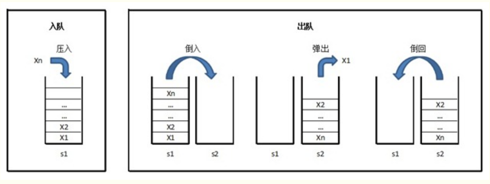
class Solution
{
public:
//压入的时候以stack1
void push(int node) {
stack1.push(node);
}
int pop() {
int n=stack1.size();
for(int i=0;i<n;i++){
stack2.push(stack1.top());
stack1.pop();
}
int result=stack2.top();
stack2.pop();
int m=stack2.size();
for(int i=0;i<m;i++){
stack1.push(stack2.top());
stack2.pop();
}
return result;
}
private:
stack<int> stack1;
stack<int> stack2;
};6、旋转数组的最小数字
题目描述
把一个数组最开始的若干个元素搬到数组的末尾，我们称之为数组的旋转。输入一个非递减排序的数组的一个旋转，输出旋转数组的最小元素。例如数组{3,4,5,1,2}为{1,2,3,4,5}的一个旋转，该数组的最小值为1。NOTE：给出的所有元素都大于0，若数组大小为0，请返回0。
思路
用两个指针来进行查找，首先第一个指针指向数组头。第二个指针指向数组尾。第一个指针总是指向前面递增数组的元素，而第二个指针总是指向后面递增数组的元素。最终第一个指针将指向前面子数组的最后一个元素，而第二个指针会指向后面子数组的第一个元素。也就是它们最终会指向两个相邻的元素，而第二个指针指向的刚好是最小的元素。这就是循环结束的条件。数组用a来表示，指针移动的逻辑为:若a[left]<=a[mid]则说明a[mid]的位置还在前一个递增序列中，则可以令left=mid;若a[right]>=a[mid]，则说明a[mid]的位置还在第二个递增序列中，则可以令right=mid
下图展示了在该数组中查找最小值的过程：
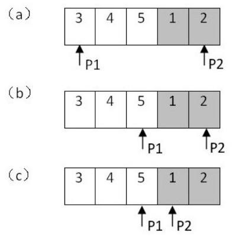
class Solution {
public:
int minNumberInRotateArray(vector<int> rotateArray) {
int i=0,j=rotateArray.size()-1,m=0;
while (j-i>1){
m=(i+j)/2;
if(rotateArray[i]<=rotateArray[m]){
i=m;
}
if(rotateArray[j]>=rotateArray[m]){
j=m;
}
}
return rotateArray[j];
}
};7、斐波那契数列
题目描述
大家都知道斐波那契数列，现在要求输入一个整数n，请你输出斐波那契数列的第n项（从0开始，第0项为0）。
n<=39
思路
非常简单了 就是第n项的值等于第n-1加 n-2的值。1,1,2,3,5,8,13……
int Fibonacci(int n) {
if(n==0){
return 0;
}
if(n==1){
return 1;
}
return Fibonacci(n-1)+Fibonacci(n-2);
}以上的写法是使用递归的思想写的，写起来和清楚明了，但是这样子写是不能AC的，算法的复杂度过大。所以我们不应该使用递归的想法写，而应该用循环写。
class Solution {
public:
int Fibonacci(int n) {
int a=0,b=1,c=1;
if(n==0)return 0;
else if(n==1) return 1;
else {
for (int i = 2; i <=n; i++) {
c=a+b;
a=b;
b=c;
}
return c;
}
}
};8、跳台阶
题目描述
一只青蛙一次可以跳上1级台阶，也可以跳上2级。求该青蛙跳上一个n级的台阶总共有多少种跳法（先后次序不同算不同的结果）。
思路
这个其实还是可以用递归的思想来，每次条台阶可以有两种跳法，跳一次之后还剩下n-1个台阶，则又变成和跳台阶一样的问题。跳两级之后还剩n-2个台阶，同样也变成和跳台阶一样的问题。则f(n)=f(n-1)+f(n-2)
class Solution {
public:
int jumpFloor(int number) {
if(number==2){
return 2;
}
else if(number==1){
return 1;
}
return jumpFloor(number-1)+jumpFloor(number-2);
}
};9、变态跳台阶
题目描述
一只青蛙一次可以跳上1级台阶，也可以跳上2级……它也可以跳上n级。求该青蛙跳上一个n级的台阶总共有多少种跳法。
思路
用Fib(n)表示青蛙跳上n阶台阶的跳法数，青蛙一次性跳上n阶台阶的跳法数1(n阶跳)，
设定Fib(0) = 1；
当n = 2 时， 有两种跳的方式，一阶跳和二阶跳：Fib(2) = Fib(1) + Fib(0) = 2;
当n = 3 时，Fib(3) = Fib(2) + Fib(1)+Fib(0)=4;
当n = n 时，Fib(n) = Fib(n-1)+Fib(n-2)+Fib(n-3)+……….+Fib(n-n)=Fib(0)+Fib(1)+Fib(2)+…….+Fib(n-1)
又因为Fib(n-1)=Fib(0)+Fib(1)+Fib(2)+…….+Fib(n-2)
两式相减得：Fib(n)-Fib(n-1)=Fib(n-1) －－－－－－>Fib(n) = 2*Fib(n-1) n >= 2
因此递归等式如下：
$$
\operatorname{Fib}(n)=\left\{\begin{array}{ll}{1} & {n=0} \\ {1} & {n=1} \\ {2 * F i b(n-1)} & {n>2}\end{array}\right.
$$
class Solution {
public:
int jumpFloorII(int number) {
if (number == 1) {
return 1;
}
return 2*jumpFloorII(number-1);
}
};10、矩形覆盖
题目描述
我们可以用21的小矩形横着或者竖着去覆盖更大的矩形。请问用n个21的小矩形无重叠地覆盖一个2*n的大矩形，总共有多少种方法？
思路
n=1 - 只有横放一个矩形一种解决办法
n=2 - 有横放一个矩形，竖放两个矩形两种解决办法
n=3 - n=2的基础上加1个横向，n=1的基础上加2个竖向
n=4 - n=3的基础上加1个横向，n=2的基础上加2个竖向
…….
f(n)=f(n-1)+f(n-2)
class Solution {
public:
int rectCover(int number) {
if (number == 0)
return 0;
else if(number == 1){
return 1;
}
else if (number == 2){
return 2;
}
return rectCover(number - 1) + rectCover(number - 2);
}
};11、二进制中１的个数
题目描述
输入一个整数，输出该数二进制表示中1的个数。其中负数用补码表示
思路
如果一个整数不为0，那么这个整数至少有一位是1。如果我们把这个整数减1，那么原来处在整数最右边的1就会变为0，原来在1后面的所有的0都会变成1(如果最右边的1后面还有0的话)。其余所有位将不会受到影响。我们将原来的n和ｎ-1做&操作，则１的个数就会减一。一直做这样的操作，直到相与的结果为０。
class Solution {
public:
int NumberOf1(int n) {
if(n==0) return 0;
int i=0;
while (n){
i++;
n=n&(n-1);
}
return i;
}
};12、数值的整数次方
题目描述
给定一个double类型的浮点数base和int类型的整数exponent。求base的exponent次方。保证base和exponent不同时为0
思路
这个题目非常简单，循环连乘，注意一下特殊的情况
class Solution {
public:
double Power(double base, int exponent) {
double result=0.0;
if(fabs(base-0)<0.000001){
return result;
}
else if(exponent==0){
return 1.0;
}
else if(exponent<0){
int n=-exponent;
result=1;
for(int i=0;i<n;i++){
result=result*base;
}
result=1/result;
return result;
}
else if(exponent>0){
result=1;
for(int i=0;i<exponent;i++){
result=result*base;
}
return result;
}
}
};13、调整数组顺序使奇数位于偶数前面
题目描述
输入一个整数数组，实现一个函数来调整该数组中数字的顺序，使得所有的奇数位于数组的前半部分，所有的偶数位于数组的后半部分，并保证奇数和奇数，偶数和偶数之间的相对位置不变。
思路
这里可以参考快排的思想，快速排序的基本思想是：通过一趟排序将待排记录分割成独立的两部分，其中一部分记录的关键字均比另一部分记录的关键字小，则可分别对这两部分记录继续进行排序，以达到整个序列有序的目的。因此，我们可以借鉴快速排序的思想，通过设置两个指针来进行交换操作，从而减少移动次数，提高效率：
- Step第一个指针初始化时指向数组的第一个数字，它只向后移动；
- Step第二个指针初始化时指向数组的最后一个数字，它只向前移动。
- Step在两个指针相遇之前，第一个指针总是位于第二个指针的前面。如果第一个指针指向的数字是偶数，并且第二个指针指向的数字是奇数，我们就交换这两个数字。
下图展示了调整数组{1,2,3,4,5}使得奇数位于偶数前面的过程：
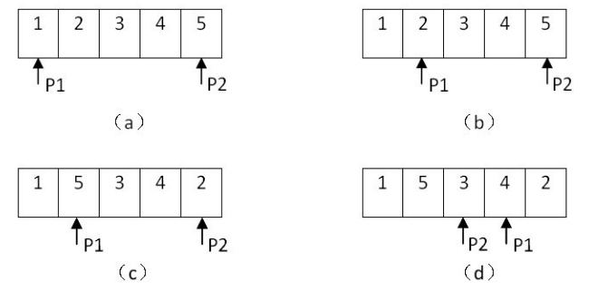
class Solution {
public:
void reOrderArray(vector<int> &array) {
if(array.size()==0){
return;
}
int i=0,j=array.size()-1;
while (i!=j){
if(array[i]%2==0&&array[j]%2==1){
int temp;
temp=array[i];
array[i]=array[j];
array[j]=temp;
i++;
j--;
}
else if(array[i]%2==1){
i++;
}
else if(array[j]%2==0){
j--;
}
}
}
};然而这样子写不能通过。因为快排是不稳定的，不能保证调整之后偶数和偶数，奇数与奇数之间的相对位置不变。
正解：从前往后找偶数，找到之后找这个偶数后边第一个奇数，每当找到前面的偶数和后面的奇数之后，那么把之间的部分（包括那个偶数）统一后移一位， 因为之间的都是偶数（从找到的偶数后面开始找到的第一个奇数和开始找到的偶数之间肯定都是偶数了），之前又没有偶数了（因为找的是从左往右第一个偶数），把他们统一后移一位，这样把提前保存起来的那个奇数放到前边空出来的那一位。这样相当于132457把5移动到24这两个偶数的前面，1 和5本来就是前后顺序的。这样堡整理调整之后的奇偶各自的相对顺序不会变。
class Solution {
public:
void reOrderArray(vector<int> &array) {
if(array.size()==0){
return;
}
int i=0,j=0;
while (i<array.size()){
if(array[i]%2==1){ //是奇数就后移
i++;
}
else if(array[i]%2==0){
j=i+1;
for (j;j<array.size();j++){ //找在这个偶数之后的第一个奇数
if(array[j]%2==1){
break;
}
}
if (j==array.size()) break;//如果之后都没有奇数的话，说明所有的排序完成
int tmp=array[j];
for(int k=j-1;k>=i;k--){//偶数包括奇数和偶数之间的数都后移一位
array[k+1]=array[k];
}
array[i]=tmp;
}
}
}
};14、链表中倒数第k个结点
题目描述
输入一个链表，输出该链表中倒数第k个结点。
思路
注意这个题目是返回节点，而不是返回值。返回值的话可以用栈来存储。返回节点则不能这样做。
设置两个指针，先让第一个指针移动k-1次。然后两个指针同时移动，当第一个指针到达最后一个节点，第二个指针就在倒数第k个节点。
注意边界：K长度可能超出链表长度，所以当第一个指针的next为空时，返回null
class Solution {
public:
ListNode* FindKthToTail(ListNode* pListHead, unsigned int k) {
if(pListHead== NULL)
return NULL;
ListNode *head=pListHead,*find=pListHead;
for(int i=0;i<k;i++){
if(head==NULL) {
return NULL;
}
head=head->next;
}
while (head!= NULL){
head=head->next;
find=find->next;
}
return find;
}
};写代码的时候我是先让头一个指针先移动了k,是因为在后边判断他的条件是head!= NULL，相当于是在这里是需要比后边的那个指针多走一步，所以让前边的指针就先移动了k步，而不是k-1步。
15、反转链表
题目描述
输入一个链表，反转链表后，输出新链表的表头。
思路
很简单，边遍历原来的链表，边创建新链表，新链表使用前插法插入。
ListNode* ReverseList(ListNode* pHead) {
if(pHead==NULL||pHead->next==NULL){
return pHead;
}
ListNode *revers,*p=pHead;
while (p!=NULL){
ListNode *tmp=new ListNode(p->val);
tmp->next=revers;
revers=tmp;
p=p->next;
}
return revers;
}这样子会开创更多的空间，更好的方法是使用三个指针的遍历操作来完成。
class Solution {
public:
ListNode* ReverseList(ListNode* pHead) {
if(pHead==NULL||pHead->next==NULL){
return pHead;
}
ListNode *pre = NULL; // 当前节点的前一个节点
ListNode *next = NULL; // 当前节点的下一个节点
while( pHead != NULL){
next = pHead->next; // 记录当前节点的下一个节点位置；
pHead->next = pre; // 让当前节点指向前一个节点位置，完成反转
pre = pHead; // pre 往右走
pHead = next;// 当前节点往右继续走
}
return pre;
}
};16、合并两个排序的链表
题目描述
输入两个单调递增的链表，输出两个链表合成后的链表，当然我们需要合成后的链表满足单调不减规则。
思路
这也是一个很简单的题目了
/*
struct ListNode {
int val;
struct ListNode *next;
ListNode(int x) :
val(x), next(NULL) {
}
};*/
class Solution {
public:
ListNode* Merge(ListNode* pHead1, ListNode* pHead2)
{
ListNode *merge=new ListNode(0),*p=merge;
while (pHead1!=NULL&&pHead2!=NULL){
if(pHead1->val<=pHead2->val){
p->next=new ListNode(pHead1->val);
p=p->next;
pHead1=pHead1->next;
}
else{
p->next=new ListNode(pHead2->val);
p=p->next;
pHead2=pHead2->next;
}
}
if(pHead1==NULL){
while (pHead2!=NULL){
p->next=new ListNode(pHead2->val);
p=p->next;
pHead2=pHead2->next;
}
}
if(pHead2==NULL){
while (pHead1!=NULL){
p->next=new ListNode(pHead1->val);
p=p->next;
pHead1=pHead1->next;
}
}
return merge->next;
}
};17、树的子结构
题目描述
输入两棵二叉树A，B，判断B是不是A的子结构。（ps：我们约定空树不是任意一个树的子结构）
思路
想要判断B是不是A的子结构，我们需要去依次遍历比较双方的结点value。这边采用的是递归的思想来解决该问题。
首先将A的根节点与B的根节点比较，
１．若不相等，则继续扫描A的左右子树，
×Ａ的左子树，与B的根节点比较，
＋若该子树的根节点与B的根节点相等，则继续遍历该子树的左右子树与Ｂ的左右子树是否相等
＋若不相等，则继续扫描A的子树结点，直到所有结点扫描结束
×Ａ的右子树，与B的根节点比较，
＋若该子树的根节点与B的根节点相等，则继续遍历该子树的左右子树与Ｂ的左右子树是否相等
＋若不相等，则继续扫描A的子树结点，直到所有结点扫描结束
２．若相等，则双方各自分别往其左右子树方向走；判断左右子树结点是否相等
所以代码如下：
/*
struct TreeNode {
int val;
struct TreeNode *left;
struct TreeNode *right;
TreeNode(int x) :
val(x), left(NULL), right(NULL) {
}
};*/
class Solution {
public:
bool HasSubtree(TreeNode* pRoot1, TreeNode* pRoot2)
{
if(pRoot1==NULL||pRoot2==NULL){
return false;
}
bool flag= false;
if(pRoot1->val==pRoot2->val) {//根结点相等,比较左右子树
flag=IsSubtree(pRoot1, pRoot2);
}
if(!flag){
flag= HasSubtree(pRoot1->left,pRoot2);//根节点不相同的时候，找左子树
}
if(!flag){
flag= HasSubtree(pRoot1->right,pRoot2);//左子树也没有找到的话，继续找右子树
}
return flag;
}
bool IsSubtree(TreeNode *pRoot1,TreeNode *pRoot2){
if(pRoot2==NULL){//如果子树都遍历完说明都找到了
return true;
}
if(pRoot1==NULL){//如果母树遍历完 说明没有子树结构
return false;
}
if(pRoot1->val==pRoot2->val){//当根节点一样的时候，继续递归，不是就返回false
return IsSubtree(pRoot1->left,pRoot2->left)&&IsSubtree(pRoot1->right,pRoot2->right);
}
else{
return false;
}
}
};18、二叉树的镜像
题目描述
操作给定的二叉树，将其变换为源二叉树的镜像。
二叉树的镜像定义：
源二叉树
8
/ \
6 10
/ \ / \
5 7 9 11
镜像二叉树
8
/ \
10 6
/ \ / \
11 9 7 5思路
就是将根结点的左右子树交换，写的时候，应该写交换指针的指向位置，而不是交换左右子树的值。然后依次递归。
/*
struct TreeNode {
int val;
struct TreeNode *left;
struct TreeNode *right;
TreeNode(int x) :
val(x), left(NULL), right(NULL) {
}
};*/
class Solution {
public:
void Mirror(TreeNode *pRoot) {
if(pRoot==NULL||pRoot->right==NULL&&pRoot->left==NULL){
return;
}
TreeNode *tmp;
tmp=pRoot->left;//记录下来左子树的指向位置
pRoot->left=pRoot->right;//左子树指向右子树
pRoot->right=tmp;//右子树指向左子树
Mirror(pRoot->left); //递归左子树
Mirror(pRoot->right);//递归右子树
}
};19、顺时针打印矩阵
题目描述
输入一个矩阵，按照从外向里以顺时针的顺序依次打印出每一个数字，例如，如果输入如下4 X 4矩阵： 1 2 3 4 5 6 7 8 9 10 11 12 13 14 15 16 则依次打印出数字1,2,3,4,8,12,16,15,14,13,9,5,6,7,11,10.
思路
就是按照顺时针顺序打印就好。用四个变量 left,right,up,down的组合来表示将打印的坐标。上边的一行是打印两个角，右边的一列打印右下的那个角，下边的一行是打印左边的那个角，最后左边的那一列，不打印角。
class Solution {
public:
vector<int> printMatrix(vector<vector<int> > matrix) {
// 存储结果
vector<int> result;
// 边界条件
if(matrix.empty())
return result;
// 二维矩阵行列
int height = matrix.size();
int with = matrix[0].size();
// 圈的四个角标
int left = 0;
int right = with-1;
int up = 0;
int down = height-1;
// 循环打印圈
while(left <= right && up <= down){ // 循环条件：
// 圈的第一步
for(int i=left;i<=right;++i) // 第一步循环条件
result.push_back(matrix[up][i]); // 第一步坐标
// 圈的第二步
if(up<down) // 第二步边界条件
for(int i=up+1;i<=down;++i) // 第二步循环条件
result.push_back(matrix[i][right]); // 第二步坐标
// 圈的第三步
if(up<down && left<right) // 第三步边界条件
for(int i=right-1;i>=left;--i) // 第三步循环条件
result.push_back(matrix[down][i]); // 第三步坐标
// 圈的第四步
if(up+1<down && left<right) // 第四步边界条件
for(int i=down-1;i>=up+1;--i) // 第四步循环条件
result.push_back(matrix[i][left]); // 第四步坐标
++left;--right;++up;--down;
}
return result;
}
};20、包含min函数的栈
题目描述
定义栈的数据结构，请在该类型中实现一个能够得到栈中所含最小元素的min函数（时间复杂度应为O（1））。
思路
新建一个辅助栈 min 来存放最小值。入栈时，与辅助栈顶比较大小，如果小就入辅助栈min ；如果大就只入栈data。
出栈时，注意辅助栈min 和 栈data 都要出栈。
如下例：
data栈 依次入栈元素 5, 4, 3, 8, 10, 11, 12, 1；
min栈 依次入栈元素5， 4, 3，no, no，no，no， 1。
出栈时，min的栈顶元素若与栈data的栈顶元素不一样，则栈min不出栈；否则栈min元素也要出栈。
using namespace std;
class Solution {
public:
stack<int> data;
stack<int> mindata;
void push(int value) {
data.push(value);
if(mindata.empty()){
mindata.push(value);
}
else{
if(mindata.top()>value){
mindata.push(value);
}
}
}
void pop() {
if(data.top()==mindata.top()){
data.pop();
mindata.pop();
}
else{
data.pop();
}
}
int top() {
return data.top();
}
int min() {
return mindata.top();
}
};21、栈的压入弹出序列
题目描述
输入两个整数序列，第一个序列表示栈的压入顺序，请判断第二个序列是否可能为该栈的弹出顺序。假设压入栈的所有数字均不相等。例如序列1,2,3,4,5是某栈的压入顺序，序列4,5,3,2,1是该压栈序列对应的一个弹出序列，但4,3,5,1,2就不可能是该压栈序列的弹出序列。（注意：这两个序列的长度是相等的）
思考
如果下一个弹出的数字刚好是栈顶数字，那么直接弹出
如果下一个弹出的数字不在栈顶，我们把压栈序列中还没有入栈的数字压入辅助栈，直到把下一个需要弹出的数字压入栈顶为止。
如果所有的数字都压入栈了仍然没有找到下一个弹出的数字，那么该序列不可能是一个弹出序列。
class Solution {
public:
bool IsPopOrder(vector<int> pushV,vector<int> popV) {
int i=0,j=0;//i遍历push,j遍历pop
stack<int> data;
while (i<=pushV.size()){
if(data.empty()){
data.push(pushV[i]);
i++;
}
else if(data.top()==popV[j]){
data.pop();
j++;
}
else{
data.push(pushV[i]);
i++;
}
}
if(j==popV.size()){
return true;
}
else{
return false;
}
}
};22、从上往下打印二叉树
题目描述
从上往下打印出二叉树的每个节点，同层节点从左至右打印。
思路
这个题目其实考察的是层次遍历。层序遍历的算法思想如下：
×初始化设置一个队列；
×将根结点指针入队列；
×当队列非空时，循环执行下列步骤：
（１）出队列取得一个结点指针， 访问该结点；
（２）若该结点的左子树非空，则将该结点的左子树指针入队列；
（３）若该结点的右子树非空，则将该结点的右子树指针入队列；
×直至队空算法结束。
/*
struct TreeNode {
int val;
struct TreeNode *left;
struct TreeNode *right;
TreeNode(int x) :
val(x), left(NULL), right(NULL) {
}
};*/
class Solution {
public:
vector<int> PrintFromTopToBottom(TreeNode* root) {
queue<TreeNode*> q;
vector<int> result;
if(root==NULL){
return result;
}
q.push(root);
while (!q.empty()){
TreeNode *tmp=q.front();
result.push_back(tmp->val);//访问
q.pop();//出队
if(tmp->left!=NULL){//存在左子树就左子树入队
q.push(tmp->left);
}
if(tmp->right!=NULL){//存在右子树就右子树入队
q.push(tmp->right);
}
}
return result;
}
};23、二叉搜索树的后序遍历序列
题目描述
输入一个整数数组，判断该数组是不是某二叉搜索树的后序遍历的结果。如果是则输出Yes,否则输出No。假设输入的数组的任意两个数字都互不相同。
思路
二叉搜索树的概念：根节点为参考，比根节点大的数据在右侧，比根节点小的数据在左侧，叶子节点左子节点比父节点小，右子节点比父节点要大。
所以以4，8，6，12，16，14，10为例子，首先，根节点10，这是可以直接得到的，那么根据其性质，根节点左侧的小于10，根节点右侧的大于10，那么可以将本题中的序列，切分为两个子集，切分为子集，一般的方式可以采用递归了，因为子集和其本身都是一个集合的抽象，将子集和全集视为一个类型的对象就可以了。注意这里当切分完成后需要进行一个检查，这个检查就是：第一个大于10的后面的这些序列中必须全部大于10，否则直接返回false。再看看左侧子集，左侧子集的话主要是4，8，6这个三个，然后将其视为新的全集进行上述操作，那么将6作为新的根节点，那么6而言，将4，8切分为两个子集，然后子集内进行上面的操作。
class Solution {
public:
bool VerifySquenceOfBST(vector<int> sequence) {
if(sequence.empty()){
return false;
}
if(sequence.size()==1){
return 1;
}
int root=sequence[sequence.size()-1];
int index=-1;
vector<int> left;
vector<int> right;
for(int i=0;i<sequence.size()-1;i++){
if(sequence[i]<root){
left.push_back(sequence[i]);
}
if(sequence[i]>root){
index=i;
break;
}
}
if(index>0||left.empty()) {//index大于0是确保不会出现right为空。left.empty()是所有都是右子树的情况。
for (int i = index; i < sequence.size() - 1; i++) {
if (sequence[i] > root) {
right.push_back(sequence[i]);
}
if (sequence[i] < root) {
return false;
}
//如果分界还存在比根小的，说明不是二叉搜索树的后序
}
}
//递归处理
if(left.empty()){
return VerifySquenceOfBST(right);
}
else if(right.empty()){
return VerifySquenceOfBST(left);
}
else {
return VerifySquenceOfBST(left) && VerifySquenceOfBST(right);
}
}
};24、二叉树中和为某一值的路径
题目描述
输入一颗二叉树的根节点和一个整数，打印出二叉树中结点值的和为输入整数的所有路径。路径定义为从树的根结点开始往下一直到叶结点所经过的结点形成一条路径。(注意: 在返回值的list中，数组长度大的数组靠前)
思路
例子如下图，二叉树中有两条和为22的路径：{10,5,7}和{10,12}
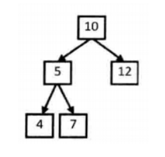
本题使用前序遍历的方式访问节点，使用二维向量allpath存储全部路径，使用一维向量path存储当前路径。遍历二叉树的过程：按前序遍历顺序访问每一个节点。访问每个结点时，将结点添加到路径向量path中。如果当前结点是叶子结点，则判断当前路径是否是符合条件的路径，符合条件的路径存入到二维向量allpath；如果当前结点不是叶子结点，则递归当前节点的左右子节点。
那么有一个很重要的问题是：先序遍历便是先左后右。检查完左子树后，会对path就行修改，再去查找右子树，如何将path恢复到之前未进行左子树检查的状态？dfs的过程是先序遍历的过程，所以一旦遍历到叶子结点，便将path最后的节点移除掉，这样在递归一层一层进行的时候将值添加进path,在递归返回的过程中将path最末尾的元素一个一个移除。这样便依靠递归的特性完成了路径的恢复。
/*
struct TreeNode {
int val;
struct TreeNode *left;
struct TreeNode *right;
TreeNode(int x) :
val(x), left(NULL), right(NULL) {
}
};*/
class Solution {
public:
vector<vector<int>> allpath;
vector<int> path;
vector<vector<int> > FindPath(TreeNode* root,int expectNumber) {
if(root) {
dfsfind(root, expectNumber);
}
return allpath;
}
void dfsfind(TreeNode * root,int expectNumber){
path.push_back(root->val);
if(!root->left&&!root->right){//当遍历到叶节点的时候
if(expectNumber-root->val==0){//此条路径满足要求
allpath.push_back(path);
}
}
else {
if (root->left != NULL) {//如果存在左子树 递归左子树
dfsfind(root->left, expectNumber - root->val);
}
if (root->right != NULL) {//存在右子树 递归右子树
dfsfind(root->right, expectNumber - root->val);
}
}
if(!path.empty()){ //删除最后的结点找下一个路径
path.pop_back();
}
}
};25、复杂链表的复制
题目描述
输入一个复杂链表（每个节点中有节点值，以及两个指针，一个指向下一个节点，另一个特殊指针指向任意一个节点），返回结果为复制后复杂链表的head。（注意，输出结果中请不要返回参数中的节点引用，否则判题程序会直接返回空）
思路
如下所示是一个复杂链表
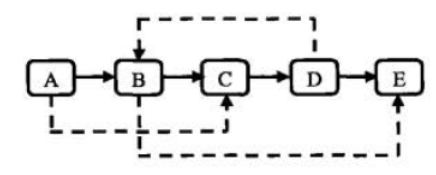
第一步：根据原始链表的每个结点N 创建对应的 N’。把 N’链接在N的后面。
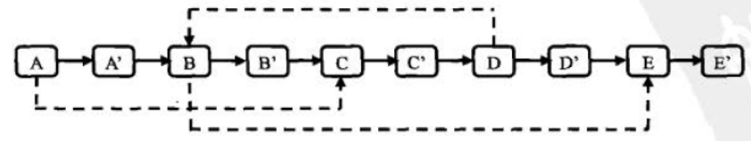
第二步：设置复制出来的结点的 sibling。假设原始链表上的 N 的 sibling 指向结点 S，那么其对应复制出来的 N’是 N的 pext 指向的结点，同样 S’也是 S 的 next 指向的结点。设置 sibling 之后的链表下图所示。
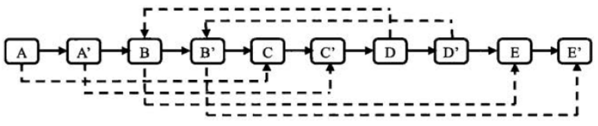
第三步：把这个长链表拆分成两个链表。把奇数位置的结点用 next 链接起来就是原始链表，把偶数位置的结点用 next 链接起来就是复制 出来的链表。链表拆分之后的两个链表下图所示。
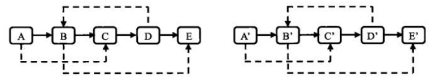
/*
struct RandomListNode {
int label;
struct RandomListNode *next, *random;
RandomListNode(int x) :
label(x), next(NULL), random(NULL) {
}
};
*/
class Solution {
public:
RandomListNode* Clone(RandomListNode* pHead)
{
if(pHead==NULL)
return pHead;
RandomListNode* p=pHead;
while(p){ //完成第一步
RandomListNode *tmp=new RandomListNode(p->label);
tmp->next=p->next;
p->next=tmp;
p=tmp->next;
}
p=pHead;//即将完成第二步复制 random指针
while (p){
if(p->random!=NULL) {
p->next->random = p->random->next;//找到random指针赋值
}
p=p->next->next;//遍历
}
p=pHead;//即将完成第三步，拆分
RandomListNode *cHead=p->next; //返回的指针
RandomListNode *c=cHead;
while (p){
p->next=c->next;
p=p->next;
if(p==NULL){
c->next=NULL;
}
else {
c->next = p->next;
c = c->next;
}
}
return cHead;
}
};26、二叉搜索树与双向链表
题目描述
输入一棵二叉搜索树，将该二叉搜索树转换成一个排序的双向链表。要求不能创建任何新的结点，只能调整树中结点指针的指向。
思路
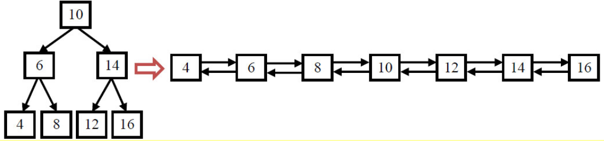
/*
struct TreeNode {
int val;
struct TreeNode *left;
struct TreeNode *right;
TreeNode(int x) :
val(x), left(NULL), right(NULL) {
}
};*/
class Solution {
public:
TreeNode* Convert(TreeNode* pRootOfTree)
{
if(pRootOfTree==NULL||(pRootOfTree->left==NULL&&pRootOfTree->right==NULL)){
return pRootOfTree;
}
TreeNode *left=Convert(pRootOfTree->left);
TreeNode *p=left;
//找最大的那个结点
while (p!=NULL&&p->right!=NULL){
p=p->right;
}
//改变链接位置
if(left!=NULL) {
pRootOfTree->left = p;
p->right = pRootOfTree;
}
//右子树
TreeNode *right=Convert(pRootOfTree->right);
if(right!=NULL){
right->left=pRootOfTree;
pRootOfTree->right=right;
}
return left == NULL ? pRootOfTree : left;
}
};关于递归掌握的还是不是很好。。。我哭了。。。
27、字符串的排序
题目描述
输入一个字符串,按字典序打印出该字符串中字符的所有排列。例如输入字符串abc,则打印出由字符a,b,c所能排列出来的所有字符串abc,acb,bac,bca,cab和cba。
输入描述
输入一个字符串,长度不超过9(可能有字符重复),字符只包括大小写字母。
思路
解题思路：本题求整个字符串的全排列可以看做两步
1）首先求出所有可能出现在第一位置的字母，即begin与后面所有与它不同的字母进行交换
2）固定第一个字母，求后面字母的全排列，即递归此时begin = begin+1
class Solution {
vector<string> allpath;
public:
vector<string> Permutation(string str) {
if(str.empty()){
return allpath;
}
permutation(str,0);//进行递归
sort(allpath.begin(),allpath.end());//按照字典序输出
return allpath;
}
void permutation(string str,int position){
if(position==str.size()-1){//递归终止条件
allpath.push_back(str);
}
for (int i=position;i<str.size();i++){
if(i!=position&&str[i]==str[position]){//字母相同则不交换
continue;
}
swap(str[i],str[position]);
permutation(str,position+1); //递归操作
swap(str[i],str[position]);
}
}
};28、数组中出现次数超过一半的数字
题目描述
数组中有一个数字出现的次数超过数组长度的一半，请找出这个数字。例如输入一个长度为9的数组{1,2,3,2,2,2,5,4,2}。由于数字2在数组中出现了5次，超过数组长度的一半，因此输出2。如果不存在则输出0。
思路
一个数字在数组中出现次数超过了一半，则排序后，位于数组中间的数字一定就是该出现次数超过了长度一半的数字（可以用反证法证明），也即是说，这个数字就是统计学上的中位数。所以就取排序后在数组最中间的数字。如果存在长度超过一半的数字，那么这个数字一定是这个数字。是否存在则需要遍历一遍数组。计算出这个数字在数组中出现的次数。如果大于数组的长度就返回这个数字。否则返回0。
class Solution {
public:
int MoreThanHalfNum_Solution(vector<int> numbers) {
sort(numbers.begin(),numbers.end());
int num=numbers[numbers.size()/2];
int times=0;
for(int i=0;i<numbers.size();i++){
if(numbers[i]==num){
times++;
}
}
if(times>numbers.size()/2){
return num;
}
return 0;
}
};29、最小的k个数
题目描述
输入n个整数，找出其中最小的K个数。例如输入4,5,1,6,2,7,3,8这8个数字，则最小的4个数字是1,2,3,4,。
思路
这个题太简单了，就是排序。能stl中的函数，绝对不自己写。。。。当然快排啥的代码还是要熟记于心。
class Solution {
public:
vector<int> GetLeastNumbers_Solution(vector<int> input, int k) {
vector<int> res;
if(k>input.size()){
return res;
}
sort(input.begin(),input.end());
for(int i=0;i<k;i++){
res.push_back(input[i]);
}
return res;
}
};30、连续子数组的最大和
题目描述
HZ偶尔会拿些专业问题来忽悠那些非计算机专业的同学。今天测试组开完会后,他又发话了:在古老的一维模式识别中,常常需要计算连续子向量的最大和,当向量全为正数的时候,问题很好解决。但是,如果向量中包含负数,是否应该包含某个负数,并期望旁边的正数会弥补它呢？例如:{6,-3,-2,7,-15,1,2,2},连续子向量的最大和为8(从第0个开始,到第3个为止)。给一个数组，返回它的最大连续子序列的和，你会不会被他忽悠住？(子向量的长度至少是1)
思路
这个题目是一个动态规划的题目，我们可以用dp[i]来表示以i结束的最大子序列和。array为原来的数组。则我们可以知道有以下关系，i表示遍历下标。
if(i==0|dp[i-1]<=0) dp[i]=array[i]
if(dp[i-1]>0) dp[i]=dp[i-1]+array[i]class Solution {
public:
int FindGreatestSumOfSubArray(vector<int> array) {
if(array.empty()){
return 0;
}
vector<int> dp(array.size());
dp[0]=array[0];
int max=-999999999;//初始设置一个很小的数
for (int i=1;i<array.size();i++){
if(dp[i-1]<=0){
dp[i]=array[i];
}
else{
dp[i]=dp[i-1]+array[i];
}
if(dp[i]>max){ //在dp中找最大的
max=dp[i];
}
}
return max;
}
};31、整数中１出现的次数
题目描述
求出1到13的整数中1出现的次数,并算出100到1300的整数中1出现的次数？为此他特别数了一下1~13中包含1的数字有1、10、11、12、13因此共出现6次,但是对于后面问题他就没辙了。ACMer希望你们帮帮他,并把问题更加普遍化,可以很快的求出任意非负整数区间中1出现的次数（从1 到 n 中1出现的次数）。
思路
最简单的方法，暴力遍历。
class Solution {
public:
int NumberOf1Between1AndN_Solution(int n)
{
int count = 0;
for(int i=0; i<=n; i++){
int temp = i;
//如果temp的任意位为1则count++
while(temp!=0){
if(temp%10 == 1){
count++;
}
temp /= 10;
}
}
return count;
}
};32、把数组排成最小的数
题目描述
输入一个正整数数组，把数组里所有数字拼接起来排成一个数，打印能拼接出的所有数字中最小的一个。例如输入数组{3，32，321}，则打印出这三个数字能排成的最小数字为321323。
思路
显而易见，要重新定义两个数的大小，排好序之后按顺序将字符串拼接起来即可。
如何定义两个数的大小，不太容易立刻想到。其实很简单，为了方便，先将所有的数字转换成字符串，想要比较字符串a和字符串b的大小，就是比较拼接之后的字符串ab和字符串ba的大小。如果ab < ba，则a<b。定义好这个规则之后，就可以用c++算法库中的sort 函数进行排序，最终将所有的字符串拼接起来。
注意
定义给sort函数使用的比较函数comp时，需要定义成静态函数或者全局函数，因为sort函数的第三个参数是具有两个形参的函数，而类函数会隐含的传递this指针，其实会多一个参数，导致sort函数运行报错！
如果非要用类函数的话，也不是没有办法。可以使用c++11的bind函数（注意包含头文件 #include <functional>）
写法如下：
bool comp(const string &str1,const string &str2){
string s1 = str1+str2;
string s2 = str2+str1;
return s1 < s2;
}
auto func = std::bind(&comp, this, std::placeholders::1, std::placeholders::2);
sort(nums_str.begin(), nums_str.end(),func);class Solution {
public:
static bool comp(const string &str1,const string &str2){
string s1=str1+str2;
string s2=str2+str1;
return s1<s2;
}
string PrintMinNumber(vector<int> numbers) {
vector<string> allstr;
string result;
if(numbers.empty()){
return result;
}
for(int i=0;i<numbers.size();i++){
allstr.push_back(to_string(numbers[i]));
}
sort(allstr.begin(),allstr.end(),comp);
for(int i=0;i<allstr.size();i++){
result=result+allstr[i];
}
return result;
}
};33、丑数
题目描述
把只包含质因子2、3和5的数称作丑数（Ugly Number）。例如6、8都是丑数，但14不是，因为它包含质因子7。 习惯上我们把1当做是第一个丑数。求按从小到大的顺序的第N个丑数。
思路
最简单的方法就是先通过将一个数不断除以2，3，5来判定该数是不是丑数，而后在从1开始，依次往后判断每个数是不是丑数，并记下丑数的个数，这样当计算的个数为给定值时，便是需要求的第n个丑数，这种方法的时间复杂度为O（k），这里的k为第n个丑数的大小，比如第1500个丑数的大小为859963392，那么就需要判859963392次，时间效率非常低。
直观的优化措施就是看能不能将时间复杂度降低到O（n），即只在丑数上花时间，而不在非丑数上浪费时间。其核心思想是：每一个丑数必然是由之前的某个丑数与2，3或5的乘积得到的，这样下一个丑数就用之前的丑数分别乘以2，3，5，找出这三这种最小的并且大于当前最大丑数的值，即为下一个要求的丑数。
class Solution {
public:
int GetUglyNumber_Solution(int index) {
if(index==0){
return 0;
}
int *uglynumber=new int[index];
//分别表示应该成对应的书的index
int m2=0;
int m3=0;
int m5=0;
int nextindex=1;
uglynumber[0]=1;
while (nextindex<index){
//下一个丑数赋值，明显应该取乘2,乘3,乘5的最小的那个。
uglynumber[nextindex]=min(uglynumber[m2]*2,uglynumber[m3]*3,uglynumber[m5]*5);
while (uglynumber[m2]*2<=uglynumber[nextindex]){
m2++;
}
while (uglynumber[m3]*3<=uglynumber[nextindex]){
m3++;
}
while (uglynumber[m5]*5<=uglynumber[nextindex]){
m5++;
}
nextindex++;
}
return uglynumber[index-1];
}
int min(const int &a,const int &b,const int &c){
int m=(a>b?b:a);
return (c>m?m:c);
}
};34、第一个只出现一次的字符
题目描述
在一个字符串(0<=字符串长度<=10000，全部由字母组成)中找到第一个只出现一次的字符,并返回它的位置, 如果没有则返回 -1（需要区分大小写）
思路
对于题目要求，想到的是对于每一个字符，记录它出现的次数，然后再一次遍历整个字符串，第一个出现次数为1的字符的位置即为所求。因此采用hash表的思想。对于一个字符将其ASCII码为数组下标所对应的值+1，即其ASCII码为数组下标对应的数组值为其在字符串中出现的次数。
class Solution {
public:
int FirstNotRepeatingChar(string str) {
const int size=256;
int hashtable[size]={0};
for(int i=0;i<str.size();i++){
hashtable[str[i]]+=1;
}
for(int i=0;i<str.size();i++){
if(hashtable[str[i]]==1){
return i;
}
}
return -1;
}
};35、数组中的逆序对
题目描述
在数组中的两个数字，如果前面一个数字大于后面的数字，则这两个数字组成一个逆序对。输入一个数组,求出这个数组中的逆序对的总数P。并将P对1000000007取模的结果输出。 即输出P%1000000007
输入描述
题目保证输入的数组中没有的相同的数字数据范围：
对于%50的数据,size<=10^4
对于%75的数据,size<=10^5
对于%100的数据,size<=2*10^5思路
直接求解的时间复杂度太高，所以还是用归并排序的思想
首先拆分，然后合并，以数组｛7, 5, 6, 4｝为例来分析统计逆序对的过程。
（１）拆分
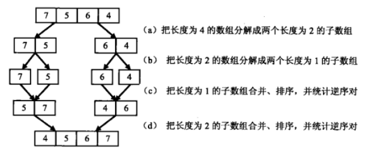
（２）归并
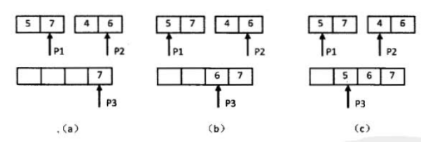
（a）P1指向的数字大于P2指向的数字，表明数组中存在逆序对．P2 指向的数字是第二个子数组的第二个数字， 因此第二个子数组中有两个数字比7 小． 把逆序对数目加2，并把7 复制到辅助数组，向前移动P1和P3.
（b） P1指向的数字小子P2 指向的数字，没有逆序对．把P2 指向的数字复制到辅助数组，并向前移动P2 和P3 .
（c） P1指向的数字大于P2 指向的数字，因此存在逆序对． 由于P2 指向的数字是第二个子数组的第一个数字，子数组中只有一个数字比5 小． 把逆序对数目加1 ，并把5复制到辅助数组，向前移动P1和P3 .
（d）复制第二个子数组最后剩余的4 到辅助数组中
所以最后的返回的应该是left的逆序对+right的逆序对+归并的逆序对。
class Solution {
public:
int InversePairs(vector<int> data)
{
int length = data.size();
if(length <= 0)
return 0;
//定义辅助数组
vector<int> copy;
for(int i=0;i<length;i++)
{
copy.push_back(data[i]);
}
int count = InversePairsCore(data,copy,0,length-1);
return count;
}
int InversePairsCore(vector<int> &data,vector<int> ©,int start,int end)
{
//结束递归条件,只剩一个元素
if(start == end)
{
copy[start] = data[start];
return 0;
}
int length = (end-start)/2;
int left = InversePairsCore(copy,data,start,start+length)%1000000007;
int right = InversePairsCore(copy,data,start+length+1,end)%1000000007;
//i初始化为前半段最后一个数字下标
int i = start+length;
//j吃书画问后半段最后一个数字下标
int j = end;
int indexCopy = end;
int count = 0;
while(i>=start && j>=start+length+1)
{
if(data[i]>data[j])
{
copy[indexCopy--] = data[i--];
count+=j-start-length;//右侧一共有j-start-length个元素，都小于data[i]
if(count >= 1000000007)
{
count %= 1000000007;
}
}
else
{
copy[indexCopy--] = data[j--];//右侧元素大不存在逆序对
}
}
for(;i>=start;i--)
{
copy[indexCopy--] = data[i];
}
for(;j>=start+length+1;j--)
{
copy[indexCopy--] = data[j];
}
return (left+right+count)%1000000007;
}
};依然递归。。。。什么时候能写好递归。。。。。
36、两个链表的第一个公共结点
题目描述
输入两个链表，找出它们的第一个公共结点。
思路
遍历链表求得两个链表各自的长度；因为两个链表的最后部分是重叠的，所以先让长的链表走几步，相同后同时向前遍历。过程中节点相同的时候，即为第一个公共节点。时间复杂度O(m+n)
/*
struct ListNode {
int val;
struct ListNode *next;
ListNode(int x) :
val(x), next(NULL) {
}
};*/
class Solution {
public:
ListNode* FindFirstCommonNode( ListNode* pHead1, ListNode* pHead2) {
if(!(pHead1&&pHead2)){
return NULL;
}
ListNode *p1=pHead1,*p2=pHead2,*p3=NULL,*p4=NULL;//后来遍历p3为长的那一个，p4为短的那一个
int L1=0,L2=0;
while (p1){
p1=p1->next;
L1++;
}
while (p2){
p2=p2->next;
L2++;
}
int k=L2-L1;
if(k>=0){//说明L2这个更长
p3=pHead2;
p4=pHead1;
}
else{
k=-k;
p3=pHead1;
p4=pHead2;
}
while (p3){
if(k>0){
p3=p3->next;
k--;
}
else if(p3==p4){
return p3;
}
else{
p3=p3->next;
p4=p4->next;
}
}
return NULL;
}
};37、数字在排序数组中出现的次数
题目描述
统计一个数字在排序数组中出现的次数。
思路
本题因为数组是有序的，因此采用二分查找的方式找到k，要知道k出现次数，先找到第一个k出现的位置，再找到最后一个k出现的位置，最后k出现次数为last-first+1
class Solution {
public:
int GetNumberOfK(vector<int> data ,int k) {
int length=data.size();
if(length==0){
return 0;
}
int first=0,last=0;
int start=0,end=length-1,mid=0;
//找左边的
while(true){
if(start>end){
return 0;
}
mid=(start+end)/2;
if(data[mid]==k){
if(mid==0||data[mid-1]!=k){//前一个不为k或者这一个为0说明是第一个k
first=mid;
break;
}
else{
end=mid-1;
}
}
else if(data[mid]>k){
end=mid-1;
}
else{
start=mid+1;
}
}
//找右边的
start=0,end=length-1,mid=0;
while(true){
if(start>end){
return 0;
}
mid=(start+end)/2;
if(data[mid]==k){
if(mid==length-1||data[mid+1]!=k){//为最后一个或者后一个不为k
last=mid;
break;
}
else{
start=mid+1;
}
}
else if(data[mid]>k){
end=mid-1;
}
else{
start=mid+1;
}
}
return last-first+1;
}
};38、二叉树的深度
题目描述
输入一棵二叉树，求该树的深度。从根结点到叶结点依次经过的结点（含根、叶结点）形成树的一条路径，最长路径的长度为树的深度。
思路
1、只有一个根结点，树的深度为1
2、求左子树的深度
3、求右子树的深度
4、树的深度为两个子树中大的那个
/*
struct TreeNode {
int val;
struct TreeNode *left;
struct TreeNode *right;
TreeNode(int x) :
val(x), left(NULL), right(NULL) {
}
};*/
class Solution {
public:
int TreeDepth(TreeNode* pRoot)
{
if(pRoot==NULL){
return 0;
}
int left=1+TreeDepth(pRoot->left);
int right=1+TreeDepth(pRoot->right);
return left>right?left:right;
}
};39、平衡二叉树
题目描述
输入一棵二叉树，判断该二叉树是否是平衡二叉树。
思路
平衡二叉树，对于每个根节点左右子树高度差小于等于1，所以就是求左右子树的深度，然后再依次判断是否相差１以内。
class Solution {
public:
int TreeDepth(TreeNode* pRoot)
{
if(pRoot==NULL){
return 0;
}
int left=1+TreeDepth(pRoot->left);
int right=1+TreeDepth(pRoot->right);
return left>right?left:right;
}
bool IsBalanced_Solution(TreeNode* pRoot){
if(pRoot==NULL){
return true;
}
int left=TreeDepth(pRoot->left);
int right=TreeDepth(pRoot->right);
int gap=abs(left-right);
if(gap<=1){
return true;
}
else return false;
return IsBalanced_Solution(pRoot->left)&&IsBalanced_Solution(pRoot->right);
}
};